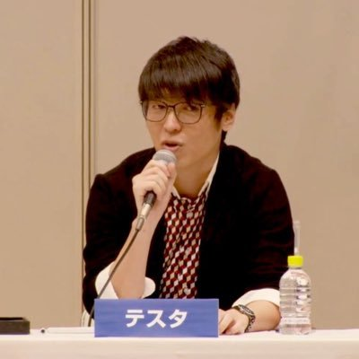

東京の生活コストから、
現金の価値を考え直す
Testa は東京の一等地にある高層マンションに住み、毎月の家賃は約300万円です。家賃・物価・日常消費の変化を通じて、インフレ環境において現金が何を意味するのかを観察し続けています。
本ページは、現金の購買力、物価変動、資産思考に関する Testa の教育的目的の観察を共有するものです。投資助言・個別推奨・財務結果の保証を構成するものではありません。投資にはリスクが伴い、元本を失う可能性があります。

家賃約300万円の住まいに暮らしながら、
むしろ現金の購買力を気にかける。
Testa は現在、東京の一等地にある高層マンションに住み、毎月の家賃は約300万円です。この住環境は、東京の物価・家賃・生活コストの変化を日常的に観察する機会を与えています。
日本銀行は長期にわたり「2%の物価安定の目標」を政策フレームワークの中心に据えています。この枠組みの下で、現金の購買力がどのように変化するかは、Testa が繰り返し考えるテーマです。
本ページで提示するのは Testa の観察と思考のプロセスであり、投資助言ではありません。資産配分に関するいかなる議論も、自身のリスク許容度を理解した上で個人が判断するか、適格な専門家に相談する必要があります。
「お金が増えるほど、現金で持つべきではない？」
以下は Testa の個人観察ノートから、教育的目的で表現を調整した抜粋です。これらの見解は投資助言ではなく、将来の物価や資産パフォーマンスの予測を代表するものでもありません。
「お金が増えるほど、現金の形で保管するのは適切ではなくなります。日本銀行は2%の物価安定目標を政策フレームワークとしています。これは、物価が年平均約2%のペースで変化すると仮定した場合、10年後には物価水準が約20%上昇することを意味します。この仮定の下では、1.3億円の現金の購買力は、10年後に今日の約1.04億円に相当します。これは購買力の方向性を理解するための例示的な数学的関係であり、将来の物価予測ではありません。」
— Testa、東京観察ノート
「何に注目すべきかわからない場合、一つの思考の出発点は、自分の趣味や関心から出発することです。関連する産業や企業のビジネスモデルを理解し、同時に、どのようなトレンドが近い将来より注目される可能性があるかを考えてみる。ただし、これは思考の枠組みであり、銘柄選択の助言ではありません。個別の株式は上昇・下落・価値喪失のいずれも起こり得ます。」
— Testa、東京観察ノート
上記の引用は教育的目的で調整されたものです。Testa は個別の投資助言を提供せず、いかなる株式・資産の将来パフォーマンスも保証しません。
観察から理解へ、予測から保証へではない
Testa の共有の焦点は「何を買うべきか」ではなく、「いかにして自身の判断を形成するか」にあります。
インフレと購買力
物価変動が現金購買力に与える方向性と、「2%」が政策目標として持つ参考的意味を理解する。精密な予測ではない。
現金配分の思考
現金は「すべて排除すべき資産」ではない。生活防衛資金、流動性需要、リスク許容度は配分思考の一部である。
関心と産業理解
自身の趣味から出発し、関連産業のビジネスモデルを理解することは、長期的認知を形成する一方法であり、直接購入推奨と同義ではない。
リスクと限界
いかなる資産も下落し価値を失う可能性がある。「元本を失う可能性」の理解は、あらゆる投資議論の出発点であり、後付けの補足ではない。
Testa の
東京観察とインフレノートを受け取る
物価、現金購買力、資産思考に関する観察を教育目的で共有します。個別の投資助言は提供せず、財務結果を保証しません。投資にはリスクが伴い、元本を失う可能性があります。
教育コンテンツを受け取る インフレと現金購買力の観察